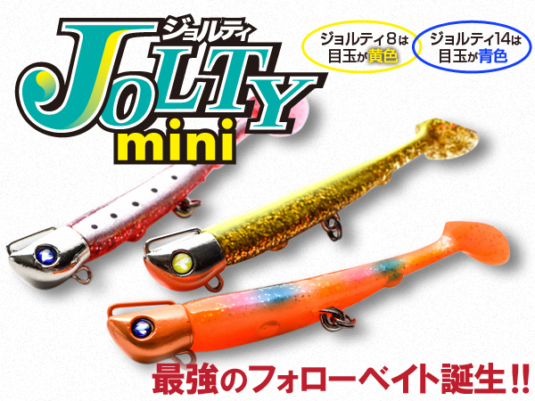
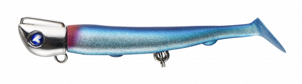
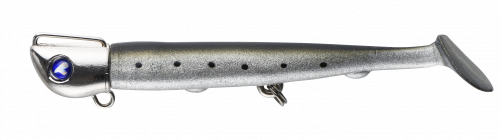
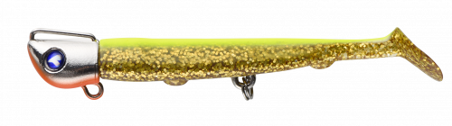
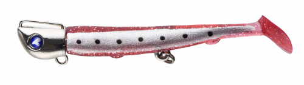

ジョルティmini
（JOLTY mini）
ジョルティmini（JOLTY mini）はBlueBlue（ブルーブルー）のジグヘッドワームです。
人気の「ジョルティ」を小型化した3インチモデルで、ジグヘッドは8gと14gの2種類。ジグヘッドの重心位置を研究し、キャスト時に風に流されにくく飛距離を出せる設計で、リトリーブではローリングアクションを出します。メーカーいわく“最強のフォローベイト”です。

画像出典:ブルーブルー公式HP
スペック
- メーカー
- BlueBlue（ブルーブルー）
- タイプ
- ジグヘッド＋ワーム（シャッドテール）
- ジグヘッド重量
- 8g／14g
- ワーム長さ
- 3インチ
- フック
- #8×2
- 入数
- ジグヘッド1個・ワーム4本
- ターゲット
- シーバス
- 価格
- 1,628円（税込）
▼今すぐチェック
ジョルティminiの特徴
プラグで反応しない魚に“もう一手”を打つ、飛んで巻くだけの小型ジグヘッド
-
重心位置を研究したジグヘッドでよく飛ぶ
ジグヘッドの重心位置を研究し、キャスト時に風に流されにくく飛距離を出せる設計。小型でも遠くのポイントまで届けられる。
-
リトリーブでローリングアクション
巻くとローリングアクションを出し、3インチのシャッドテールで小型ベイトを演出。プラグに反応しない魚へのフォローベイトとして使いやすい。
-
8g・14gの2ウェイト
ジグヘッドは8gと14gの2種類。8gは目玉が黄色、14gは目玉が青色で、見た目でも区別できる。シャローは8g、レンジを入れたい・飛距離が欲しいときは14gと使い分けられる。
ジョルティminiの使い方
基本はただ巻き。着水後にカウントダウンでレンジを決め、一定の速度で巻いてローリングアクションを出します。
プラグで反応があったのに乗らなかったとき、同じコースにジョルティminiを通す“フォローベイト”としての使い方が定番。ジグヘッドワームなので、ボトム付近をスローに引く使い方もできます。
ジョルティminiの得意な状況
プラグに反応はあるのに食い切らない状況や、小型のベイトを偏食している状況が出番。
港湾・河川・干潟など幅広いフィールドで使えるので、タックルボックスに入れておくと「最後の一手」として頼りになる1本です。
ワンポイント
ワームは1パックに4本入っていて、ジグヘッドのみの別売り（3個入り）も用意されています。予備のジグヘッドを持っておくと、根掛かりでロストしても安心です。
8gと14gで迷ったら、浅い場所や食わせ重視は8g、風が強い日や深いレンジは14gを選びましょう。
ジョルティシリーズの使い分け
| モデル | 全長／自重 | 得意な場面 |
|---|---|---|
| ジョルティmini 8g | 3インチ／8g | シャローや食わせ重視。小型ベイトパターンに（本記事のモデル） |
| ジョルティmini 14g | 3インチ／14g | 飛距離やレンジが欲しいときに（本記事のモデル） |
| ジョルティ | 4インチ／15・22・30g | オリジナルサイズ。より遠投・ディープ・大きめのベイトに |
ベイトが小さい・食いが渋いときはジョルティmini、遠投やディープを攻めたいときはオリジナルのジョルティと、状況で使い分けるとわかりやすいシリーズです。ジョルティの詳細はジョルティの記事で紹介しています。
人気カラー
ジョルティminiは全12色に加え、WEB限定カラーも展開。シーバス狙いでオススメのカラーを厳選して紹介します。

ブルーブルー／クロームメーカー名を冠した定番カラー。

イワシ／クロームイワシパターンに合わせたナチュラル系。

クリアチャートゴールド／オレンジベリーチャートとゴールドのアピール系。濁りやローライトに。

レッドサーディン／クローム赤系のベイトカラー。アピールを足したいときに。
画像出典:ブルーブルー公式HP
ジョルティminiに似ているルアー
-
 ジョルティ
ブルーブルー
詳細はこちら＞
ジョルティ
ブルーブルー
詳細はこちら＞
同シリーズのオリジナルサイズ（4インチ・15／22／30g）。より遠投したいときや深いレンジを攻めたいときの持ち替えに。
-
 VJ-10
コアマン
詳細はこちら＞
VJ-10
コアマン
詳細はこちら＞
10gのバイブレーションジグヘッド。同じ小型ジグヘッドワームだが、ローリング主体のジョルティminiに対してバイブレーションで誘う違いがある。
-
 RJ-10
コアマン
詳細はこちら＞
RJ-10
コアマン
詳細はこちら＞
10gのローリングジグヘッド。ローリングで誘う点はジョルティminiと近く、同じクラスのフォローベイトとして使い分けられる。